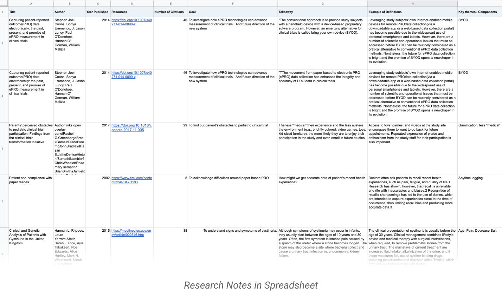
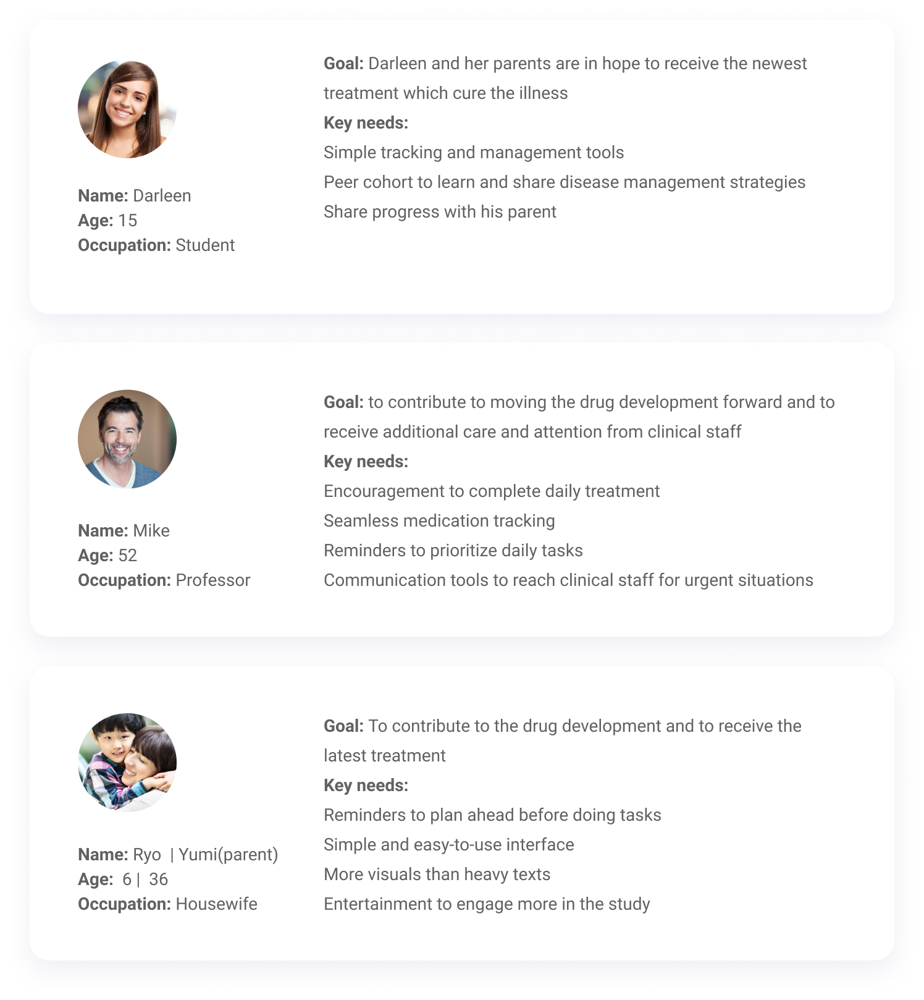

Medication Reminder UX
Duration: 2019 (1months)
My Role: UI/UX Designer
A system for tracking and improving medication adherence
notification_important
To comply with my non-disclosure agreement, I have omitted and obfuscated confidential information in this case study. All information in this case study is my own and does not necessarily reflect the views of Verily or Walgreens.
Background
Veily is building a hardware device, an app, and a console at the pharmacy. The project is still in early development stage that requires rapid explorations and validation process through research and testing to deliver the app for a trial with Walgreens. While Walgreens was planning on doing usability testing, we were in charge of helping them design the app’s UX for the planned UX study.
The Team
1 experience designer, 1 product manager, 1 industrial designer, 1 software engineer, 2 hardware engineers 2 UX researchers.
My Role as solo UX designer
- Collaborated with the cross functional team to create end-to-end experience including concept ideation, prototyping, and production-ready designs.
- Conducted UX research (competitive analysis, secondary research, interviews)
- Collaborated with the partner’s ux team to use and expand the component library and brand usage
- Provided specs and assets for the implementation
The Problems
- 75% of patients fail to take their medications as prescribed, which leads to 33% of prescriptions never being filled and $100 billion in avoidable hospitalizations.
- Patients are unaware of missed doses.
- Pharmacists are blind to what happens once medication leaves the store.
Unique Value Proposition
For patients that desire to take their medications at the right time and are open to personalized, continual support to help them stay on track.
Challenges
- Building the app on top of the existing Walgreens Pill Reminder app: Understanding the product’s ecosystem was crucial. There was a limited room for explorations in terms of UX & UI pattern.
- Finding a way to integrate the cap set up into the existing prescription setup process. The team would like patients to be able to set up multiple medications that may not have a smart cap attached.
- Create a dose history view and help thinking about the best way to implement that.
Targeted User Personas
Age:65+
Personal Device:Smartphone user
Medical Condition:United Health Care Plan with PDC<= Tier 2 in disease states of Diabetes, Hypertension or Colesterol
Lifestyle:independent, openness to use technology, desire to take medications that are prescribed.

Retrieved from Shutterstock. Senior Group Friends Exercise Relax Concept By Rawpixel.com
Product Goals
- Have user agree to study requirements
- Allow a user to setup and connect to the single or multiple smart hardware(s)
- Send dose reminders for each medication
- Send dose history for each medication
- Send data to Walgreens
Service Flow | Program Touchpoint
To understand Walgreens Pill Reminder app’s ecosystem, I walked through the flow from onboarding to get a sense of how the app works and users’ expectations toward the product. Also, I could identify where might be the best place within the flow to insert the new paring flow. Also I learned the fundamental design language that set up in the interface.
Research
Before diving into the actual work, I first started off with research to get better understanding of the problem space. From this process, I could acknowledge main obstacles and problems of paper-based PRO trials. Knowing the problems and our potential users’ needs enabled me to have the proper mindset towards the problem space.

The top 5 takeaways from landscape analysis were:
- All products provide notifications and direct emailing (some text msg)
- All apps display a list of logged events (logging and tracking)
- Most apps use their dashboards as a central area to list items (i.e. todos and announcements)
- Most apps provide feedback on taken actions motivates users (i.e. insights, check mark, celebratory moment, etc)
- Some products provide digital communication methods (i.e. live chat, messaging, voice call, video call, etc.)
Brainstorming with stakeholders
From the brainstorming session, we came up with several options for the history screen. Analyzing competitor’s UX patterns and research insights, we learned that people use dashboard to track todo lists and their health data. We wanted to make the home screen a place where users can create and track their medications, so we explored multiple versions that might be simple and straightforward for our end users to navigate through.

IA & Low Fidelity Wireframe
From the brainstorming session, we came up with hypothesis that the dashboard should focus on today’s list of items. We assumed users could set their expectation for present by following the listed todos easily when they are clearly surfaced upfront.
Testing Round 1 & Iterations
People were NOT clear about the concept and value proposition. From the first-round testing, we found that we did not clearly convey why & how the new hardware device works for users. We decided to add an in-app tutorial to help patients understand set up & use of the hardware device.

Moving forward, the tutorial should include:
- How the button works and when to press it to activate the hardware device
- How to read the “hours since last dose”
- How Bluetooth technology works & out of sync
- How Bluetooth range affects usage
- Why the hardware needs to be returned at every refill
- What happens to personal data when cap is returned
History
- Most liked seeing the detailed view for each day below the weekly view
- Anticipated looking at it in the evening to see if they were on track, or midday to check if they missed doses
- For most, Monthly View was a bit overwhelming and not as actionable as the weekly/daily view
Iconography & Reminder Functionality
- Green was a nice positive reinforcement that you’re on the right track
- Many were unsure what the yellow icon represented. Once explained, it was unclear whether this state was useful
- The pill icon wasn’t understood but people could assume that represent upcoming medications with the context
- “Take” and “Skip” were most useful for meds to still have daya around whether or not the dose was taken
MVP Design
FTU Final flowchartAfter speaking with a broad spectrum of individuals on their experience with disease management, we were able to define their goals and needs. From there we narrowed down to three user personas:
Existing User Final flowchart
After speaking with a broad spectrum of individuals on their experience with disease management, we were able to define their goals and needs. From there we narrowed down to three user personas:
Impact
We had positive reactions from most users during the second round UX research. They expressed excitement for the new technology and how the smart device synced with their personal device. “Quotes”
Next Steps
Our users had more concerns and suggestions around the smart hardware itself, not the app. For example, they would love to see the hardware also sends signals for reminders. In addition, they were unclear about some information that is featured on the surface of the hardware device. We are currently making improvements to address those main concerns that came up during the 2nd round UX testing.